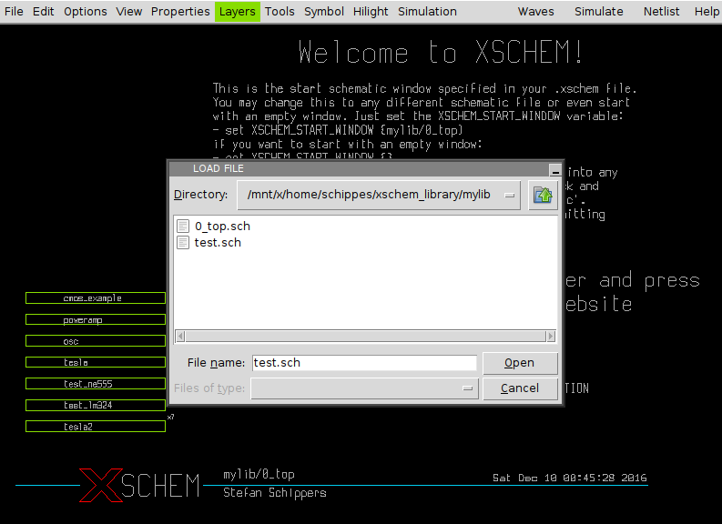
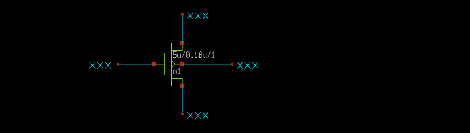
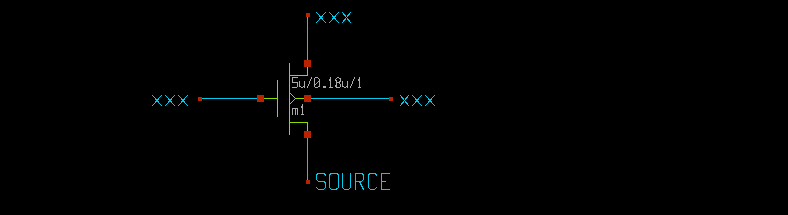
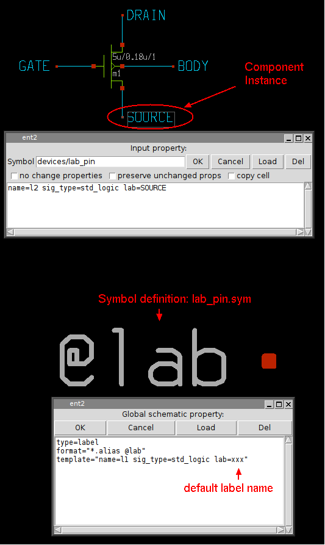
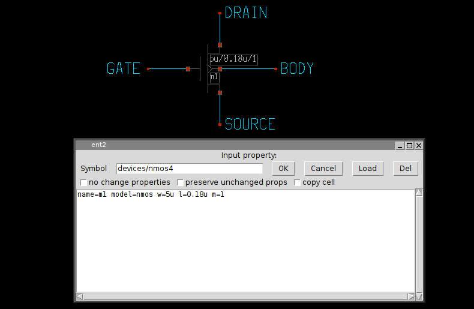
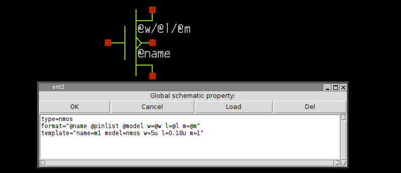

COMPONENT INSTANTIATION
In the RUN XSCHEM slide some instructions were provided as examples to place a component in the schematic. Now we will cover the topic in more detail with emphasis on component properties. Start by opening a test schematic window (you may delete any existing stuff in it if any).
Now start by inserting a component, consider for example devices/nmos4.sym; press the Insert key, navigate to the devices design library and open the nmos4.sym symbol.
Now draw some wires on each pin of the nmos; place the mouse pointer on the component pins and use the 'w' bindkey.
we need now to put labels on wire ends: use the Insert key and locate the devices/lab_pin.sym symbol. After the lab_pin symbol is placed you can move it by selecting it with the mouse and pressing the 'm' bindkey. You can also flip ( 'F') and rotate while moving ('R') to adjust the orientation. After placing the first one you may copy the others from it ('c' bindkey). The end result should look like this:
This is what an electrical circuit is all about: a network of wires and components. In this schematic we have 5 components (4 labels and one mos) and 4 nets. It is not mandatory to put a wire segment between component pins; we could equally well do this:
This circuit is absolutely equivalent to the previous one: it will produce the same
device connectivity netlist.
Now we need to set appropriate labels on the NMOS terminals. This is -again- accomplished with
component properties. Select the wire label on the nmos source pin and press the 'q'
bindkey:
Now, replace the 'xxx' default string in the dialog with a different name (example: SOURCE) After clicking OK the source terminal will have the right label.
repeat the process for the remaining GATE, DRAIN, BODY terminals;
The following picture shows the lab_pin component with its properties and the corresponding symbol definition with its global properties (remember global properties in the xschem_properties slide)
when building the netlist XSCHEM will look for wires that touch the red square of the lab_pin component and name that wires with the component 'lab' property. for example the SPICE netlist of the circuit will be:
m1 DRAIN GATE SOURCE BODY nmos w=5u l=0.18u m=1
We need now to edit the nmos properties. Select it and press the 'q' bindkey
from the edit properties dialog you see there are 5 attributes with values defined:
- The component name name=m1.
- The spice model to be used in simulation model=nmos.
- The transistor width w=5u.
- The transistor channel length l=0.18u.
- The number of parallel transistors (multiplicity) m=1.
We have never defined a value for these properties. These are the default values defined in the template attribute in the global nmos4.sym property string.

We may want to change the dimensions of the transistor; simply change the w and
l attribute values.
Also the component name may be changed as long as it is unique in the current schematic window.
All simulators require that components are unique, it is not permitted to have 2 components
with identical name, so XSCHEM enforces this.
If a name is set that matches an existing component xschem will rename it keeping the first letter (m in this example) and appending a number (so you might end up in something like m23 if there are many devices).
the name attribute is unique in the schematic window, and must be placed first in the property string. The name is also used by xschem to efficiently index it in the internal hash tables.